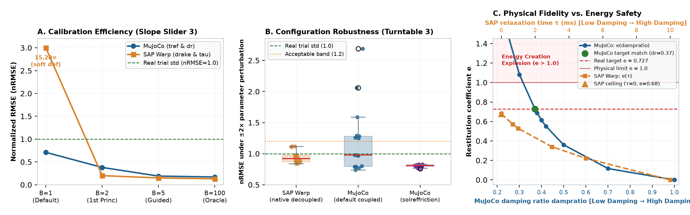

Evaluation Methodology · October 2026
Mechanism-Aware, Calibration-Budgeted
Simulator Evaluation
A unified benchmarking framework that moves beyond zero-shot defaults and brute-force sweeps to evaluate simulators on Physical Fidelity, Calibration Efficiency, and Configuration Robustness.
Research question. Instead of judging simulators by uncalibrated defaults or brute-force parameter sweeps, how do we evaluate whether an engine responds monotonically to first-principles tuning, unlocks native optimization mechanisms with a modest evaluation budget ($B \le 5$), and retains stability in a wide parameter plateau?
1. Why a New Evaluation Methodology?
The limitations of Evaluation Paradigm 1 (Default vs. Brute-Force Sweep)
Existing simulator benchmarks generally follow one of two extremes:
- Extreme A: Out-of-the-Box Zero-Shot Default ($B=1$). Simulators are run with factory default settings. While reproducible, this paradigm unfairly penalizes engines with intentionally compliant/safe default choices (e.g. SAP Warp's default soft contact
ke=2500 N/m, which sags under dynamic tilting) and completely ignores dedicated native optimization mechanisms designed specifically for that contact regime (e.g. MuJoCo'snoslip_iterations,impratio, or<pair solreffriction>). - Extreme B: Brute-Force Grid Sweep / Oracle Best ($B \ge 100$). Simulators are swept over hundreds of parameter combinations to find the global minimum error. While this demonstrates peak potential, it is highly labor-intensive and misleading: an engine might find an accidental knife-edge optimum through non-physical parameter compensation (e.g., compensating for missing static friction using an anisotropic 4-sided pyramid cone artifact), yet be practically unusable because human engineers cannot reach that optimum without exhausting hundreds of trials.
Core Thesis. A fair, unified simulator evaluation should not force artificial parameter-name matching, nor should it reward accidental brute-force optima. It must evaluate how a simulator responds to first-principles physical mechanisms under a strict, realistic calibration budget ($B \le 5$).
2. The Unified 2D Evaluation Framework
2.1 The 2D evaluation matrix: Ground truth vs. Diagnostic first-principles
Traditional simulator benchmarking assumes that high-precision real-world mocap or sensor data is always available. However, in robotic manipulation and sim-to-real transfer, real datasets are expensive, sparse, or noisy. A complete simulator evaluation framework must systematically assess engines in both regimes:
| Evaluation Dimension | With Real-World Reference (有真实参考) | Without Real Reference (First-Principles & Diagnostics) |
|---|---|---|
| 1. Fidelity (保真度) | • Task transfer & trajectory tracking (mocap nRMSE)• Slip / breakaway / impact failure agreement |
• Analytic conservation laws & MDP dissipation • Signorini / contact complementarity consistency diagnostics |
| 2. Generalization (泛化性与失效边界) | • Zero-shot transfer to held-out real scenes / objects • Accuracy under real physical perturbations |
• Configuration portability across mass/geometry scales • Failure boundary creation: cleanly isolating physical failure from numerical breakdown |
| 3. Usability (可用性与可控性) | • Real-to-sim calibration budget ($B \le 5$ runs) • Iteration cost & sensor dependency |
• Parameter interpretability (physical units vs. tuning knobs) • Mechanism-aware tuning predictability (monotonicity $|\rho_s|$) |
First-Principles Bridge. Mechanism-aware evaluation serves as the structural bridge across this 2D matrix:
It does not pretend that simulators can be proven absolutely true without real data; rather, it guarantees that a simulator is physically consistent, monotonic, and controllable before spending expensive real-robot trials.
2.2 Three structured calibration stages
For every atomic physical regime, we evaluate simulators along three progressive stages:
- Stage 1 — Out-of-the-Box Default ($B = 1$): Factory default configuration without any task-specific tuning. Measures baseline usability.
- Stage 2 — First-Principles Mechanism-Guided Calibration ($B \le 5$): The user diagnoses the governing physical mechanism from theory (e.g., normal support bandwidth, tangential regularization decoupling, or impact restitution damping), sets an analytical prior, and performs at most 3 one-dimensional bisection/gradient steps along that single physical knob.
- Stage 3 — Brute-Force Grid Oracle ($B \approx 100$): Exhaustive grid search over all available solver parameters. Used solely as a theoretical benchmark to compute small-budget regret:
\text{Regret}_{B \le 5} = \text{nRMSE}_{B \le 5} - \text{nRMSE}_{\text{oracle}}
2.3 The three quantitative evaluation axes
Rather than conflating different aspects of simulator quality into a single score, we evaluate three orthogonal axes:
| Evaluation Axis | Quantified Metrics | Physical & Practical Meaning |
|---|---|---|
| Axis 1: Physical Fidelity | • nRMSE(B=1)• nRMSE(B≤5)• nRMSE(Oracle) |
Trajectory and observable accuracy against ground-truth real mocap or analytical reference across calibration stages. |
| Axis 2: Calibratability & Efficiency | • Budget-to-pass Bpass ≤ 1.0• Regret ΔEB≤5 |
How many evaluations are needed to cross human trial repeatability (nRMSE ≤ 1.0) and reach ≥95% of the oracle ceiling. |
| Axis 3: Predictability & Robustness | • Spearman monotonicity |ρs|• ±2× neighborhood pass rate • Worst-case degradation max(nRMSE) |
Does the error decrease monotonically along the predicted physical knob? Does the calibrated setting form a wide, flat operating plateau (±2× in parameters) or a fragile knife-edge? |

solreffriction restores a 100% stable plateau. (C) Physical Fidelity vs. Energy Safety in Impact: Both axes plot in the unified physical direction (Low Damping → High Damping; bottom: MuJoCo dampratio $0.2 \to 1.0$, top: SAP Warp $\tau$ $0 \to 10\text{ ms}$). Both curves decay monotonically with increasing damping. At low damping, MuJoCo risks knife-edge energy explosion ($e > 1.0$) to reach target $e_{\text{real}}=0.73$, while SAP Warp unconditionally guarantees energy safety ($e \le 0.68 < 1.0$) at the cost of a numerical dissipation ceiling.2.4 Generalizability & Failure Boundary Creation (泛化性与失效边界构建)
A simulator that succeeds only within a calibrated comfort zone is dangerous for robot learning. Evaluating a simulator requires testing whether it can accurately predict failure boundaries and maintain physical plausibility under adversarial conditions, rather than collapsing into numerical pathologies. We evaluate failure generalizability across three key stress dimensions:
1. Configuration Portability Failures
Mass & inertia scale invariance: If an object's mass changes from $100\text{ g}$ to $1\text{ kg}$, do the tuned parameters still hold, or do they trigger catastrophic instability?
- MuJoCo: When configured with raw spring coefficients
solref=(-k, -b), effective damping depends on mass ($d = b / (2\sqrt{km})$). Changing mass without re-tuning leads to violent numerical blow-up. Conversely, dimensionless parameterssolref=(timeconst, dampratio)scale automatically with mass. - SAP Warp: Uses physical contact stiffness $k_e$ ($\text{N/m}$). Default soft compliance ($k_e = 2500\text{ N/m}$) sags under heavy loads ($>500\text{ g}$), but the rigid preset
drake($k_e = 10^5\text{ N/m}, \tau = 3\text{ ms}$) transfers cleanly across diverse geometries.
2. Dynamic & Geometric Stress Failures
Adversarial contact geometry: Probing solver stability under extreme geometric aspect ratios and high-frequency excitation:
- Thin disc penetration ($0.5\text{ mm}$): Evaluates whether high contact forces cause solver tunneling through the ground surface or chatter.
- Tight-clearance peg-in-hole ($2\text{ mm}$): Evaluates whether multi-point contact clustering causes artificial jamming or solver divergence.
- High-frequency dynamic tilting ($180\text{ Hz}$): Tests whether contact compliance bandwidth can track rapid normal load fluctuations without delay-induced lift-off.
3. Physical vs. Numerical Failure Decoupling
Clean separation of physical limits from solver bugs: When a task fails, is the failure physical or numerical?
- Physical Failure: Slipping or dropping an object because the applied grip force falls below the Coulomb threshold ($\mu N < mg$), or sliding off an incline when $\tan\theta > \mu$. Both engines must faithfully predict this boundary.
- Numerical Pathological Failure: Non-physical energy injection ($e > 1.0$), lateral drift on symmetric straight-line sliding, artificial sticking/adhesion at separation, or interpenetration tunneling. A high-quality engine must exhibit zero numerical failures when crossing physical failure boundaries.
3. Experimental Results on 4 Physical Regimes
3.1 Regime I: Inclined sliding & dynamic tilting (Slope Slider task-2 wood & task-3 metal)
First-principles mechanism: Normal contact compliance bandwidth $(\tau_n, k_n)$ relative to external tilting rate ($180\text{ Hz}$). On dynamically tilting inclines, normal contact must be stiff enough to prevent gravity sag and respond faster than the tilting rate ($\tau_n \le 5\text{ ms}$).
| Engine & Setup | Stage 1: Default ($B=1$) | Stage 2: 1st-Principles ($B \le 5$) | Stage 3: Oracle ($B \approx 100$) | Monotonicity $|\rho_s|$ | $\pm 2\times$ Neighborhood Pass Rate (max) |
|---|---|---|---|---|---|
MuJoCo (task-2 wood) |
0.52 (9.4 mm) |
0.44 (8.0 mm) |
0.44 (8.0 mm) |
0.88 |
16 / 16 (100%) (max=0.56) |
SAP Warp (task-2 wood) |
0.58 (10.4 mm) |
0.36 (6.4 mm) |
0.27 (4.9 mm) |
0.83 |
16 / 16 (100%) (max=0.74) |
MuJoCo (task-3 metal) |
0.71 (27.0 mm) |
0.19 (7.3 mm) |
0.17 (6.5 mm) |
1.00 |
15 / 16 (93.8%) (max=1.57) |
SAP Warp (task-3 metal) |
❌ 15.20 (577.7 mm) |
0.15 (5.8 mm) |
0.13 (5.1 mm) |
1.00 |
16 / 16 (100%) (max=0.25) |
Key Finding. SAP's soft literal default (ke=2500 N/m, τ=10 ms) fails on task-3 metal ($B=1$), but its Calibration Efficiency and Predictability are exceptional: setting rigid-body compliance directly from first principles (drake: ke=105 N/m, τ=3 ms) in just 1 step ($B=2$) drops error from 577.7 mm down to 7.49 mm (nRMSE = 0.20), forming a completely flat plateau where all 16 neighboring configurations satisfy nRMSE ≤ 0.25.
3.2 Regime II: Planar rotating friction & reversal (Turntable task-1 wood & task-3 metal)
First-principles mechanism: On a horizontal rotating plate, normal load is constant ($mg$). Accuracy is governed entirely by whether tangential friction tracking damping $\tau_t$ is decoupled from normal compliance $(k_n, \tau_n)$.
| Engine & Decoupling Mechanism | Stage 1: Default ($B=1$) | Stage 2: 1st-Principles ($B \le 5$) | Stage 3: Oracle ($B \approx 100$) | Monotonicity $|\rho_s|$ | $\pm 2\times$ Neighborhood Pass Rate (max) |
|---|---|---|---|---|---|
| MuJoCo (Default coupled pyramidal) | 1.29 (17.2 mm) |
0.77 (10.2 mm) |
0.73 (9.7 mm) |
1.00 (jitter at low dr) |
❌ 9 / 16 (56.2%) (max=2.69) |
MuJoCo (Unlocked solreffriction) |
— | 0.77 (10.2 mm) |
0.73 (9.7 mm) |
1.00 (decoupled) |
16 / 16 (100%) (max=0.83) |
| SAP Warp (Native decoupled $R_t = \sigma w_i$) | 1.13 (15.0 mm) |
0.85 (11.2 mm) |
0.82 (10.8 mm) |
1.00 (native) |
16 / 16 (100%) (max=1.12) |
Native vs. Configurable Decoupling. SAP Warp decouples tangential friction regularization $R_t = \sigma w_i$ natively in the solver, delivering 16 / 16 configuration robustness out of the box. MuJoCo couples normal and tangential directions by default (failing 7 of 16 neighborhood configs), but achieves identical 16 / 16 robustness once the user unlocks its native mechanism (cone="elliptic" + <pair solreffriction="0.004 1.0"/>).
3.3 Regime III: High-speed centrifugal breakaway (Turntable task-2 metal, 6 rad/s)
First-principles diagnosis: Under 6 rad/s acceleration, the block undergoes high-speed centrifugal breakaway ($v_{\text{rel}} \sim 1\text{ m/s}$). Sweeping contact solver compliance ($k_n, \tau_n$) across 80–96 configurations is the wrong physical knob. Only calibrating high-speed kinetic friction $\mu_k$ directly addresses the physical mechanism:
| Calibration Strategy | Evaluation Budget $B$ | MuJoCo (cone="elliptic") |
SAP Warp (drake) |
Physical Interpretation |
|---|---|---|---|---|
Strategy A: Blind Contact Compliance Sweep (ke, tau / solref) |
$B = 80\text{--}96$ runs | ❌ 5.38 (31.0 mm) |
❌ 4.65 (26.8 mm) |
Wrong mechanism: contact stiffness does not govern breakaway slip distance. |
Strategy B: Relying on 4-sided Pyramid Artifact (cone="pyramidal") |
$B = 1\text{--}40$ runs | 2.36 → 1.26 (7.25 mm) |
— | Non-isotropic $\sqrt{2}\mu$ diagonal force accidentally mimics higher friction. |
| Strategy C: First-Principles Kinetic Friction Calibration ($\mu_k \to 0.230$) | Only $B = 4$ runs | 0.80 (4.61 mm) |
0.78 (4.48 mm) |
Strictly monotonic ($|\rho_s|=1.00$). Both engines match reality within 4.6 mm. |
3.4 Regime IV: Energetic normal impact restitution (GAUGE Bouncing Ball at 180 Hz)
First-principles mechanism: A 121g rubber ball bounces off a wooden board with real restitution $e_{\text{real}} \approx 0.727$ (baseline RMSE 6.01 mm). Simulating at coarse timestep $\Delta t = 5.56\text{ ms}$ tests how each solver balances restitution fidelity against energy conservation:
As visualized in Figure 1(C), both engines' damping parameters are mapped along the unified physical direction (Low Damping → High Damping: MuJoCo dampratio $0.2 \to 1.0$; SAP Warp $\tau$ $0 \to 10\text{ ms}$). In both engines, restitution decays strictly monotonically with damping ($|\rho_s|=1.00$). However, their boundary behaviors diverge radically:
| Evaluation Metric | MuJoCo 3.12.0 (solref=(0.012, dampratio)) |
SAP Warp 1.16.0 (ke=2500, τ) |
Architectural Root Cause |
|---|---|---|---|
| Stage 1: Default ($B=1$) | ❌ RMSE = 110.7 mm ($e_{\text{sim}} = 0.00$) |
❌ RMSE = 119.1 mm ($e_{\text{sim}} = 0.00$) |
Both engines default to critically damped / inelastic impact. |
| Stage 2: 1st-Principles ($B \le 5$) | RMSE = 7.86 mm ($e_{\text{sim}} = 0.729$) |
RMSE = 29.40 mm ($e_{\text{sim}} = 0.678$) |
MuJoCo matches apex height; SAP is bounded by numerical dissipation ceiling. |
| Mechanism Monotonicity $|\rho_s|$ | 1.00 ($d_{\text{ref}} \downarrow \implies e_{\text{sim}} \uparrow$) |
1.00 ($\tau \downarrow \implies e_{\text{sim}} \uparrow$) |
Both engines respond strictly monotonically along their damping knob. |
| Configuration Robustness around optimum | ❌ Knife-edge fragile: • dr=0.37: 7.86 mm ($e=0.73$)• dr=0.30: 💥 105.1 mm ($e=1.08 > 1.0$) |
✅ Unconditionally energy-safe: • Monotonically saturates at $e \le 0.678 < 1.0$ • Zero risk of non-physical energy creation |
MuJoCo uses under-damped spring recoil to cancel Euler integration dissipation, risking energy explosion; SAP Warp is dissipative by design. |
4. Evaluation Paradigm 1 vs. Paradigm 2 Findings
Comparing the conclusions drawn under traditional evaluation vs. our mechanism-aware framework highlights why evaluation methodology matters:
| Evaluation Dimension | Evaluation Paradigm 1 (Traditional: Default & Brute-Force Sweep) | Evaluation Paradigm 2 (Mechanism-Aware & Calibration-Budgeted) |
|---|---|---|
| Slope Slider task-3 | Concludes SAP Warp is broken out of the box (nRMSE = 15.20) while MuJoCo is accurate (0.71). |
Reveals that setting the rigid-body preset drake ($B=2$) restores SAP Warp to 0.20, and SAP Warp possesses a significantly wider, flatter plateau (16 / 16 vs 15 / 16). |
| Turntable task-2 breakaway | Concludes MuJoCo is superior (nRMSE = 1.26–2.36 vs SAP 4.65–5.75) across 100-run sweeps. |
Proves that both engines fail when solving true isotropic Coulomb friction, and MuJoCo only won due to a 4-sided pyramid cone artifact ($\sqrt{2}\mu$). Calibrating kinetic friction directly ($B=4$) brings both to 0.78–0.80. |
| Turntable rotating friction | Reports comparable tuned numbers (0.73 vs 0.82), obscuring stability differences. |
Reveals that SAP decouples tangential friction natively (16 / 16 robustness), while MuJoCo couples them by default (9 / 16) and requires explicit solreffriction unlocking to match SAP. |
| Dynamic Impact Restitution | Reports that both engines under-bounce at default and MuJoCo tunes closer to target apex height. | Reveals the fundamental trade-off: MuJoCo achieves higher restitution ($e=0.73$) via knife-edge under-damping that risks energy explosion ($e>1.0$), while SAP Warp guarantees unconditional energy stability ($e<1.0$). |
5. Multi-Dimensional Engine Scorecard
| Evaluation Dimension | SAP Warp (v1.16.0) | MuJoCo (v3.12.0) | Advantage & Trade-Off Summary |
|---|---|---|---|
| 1. Physical Fidelity Ceiling | • Sliding & Rotation: Exceptional (nRMSE = 0.13–0.85).• Impact: Capped at $e \approx 0.68$ at 180 Hz by numerical dissipation. |
• Sliding & Rotation: Exceptional (nRMSE = 0.17–0.80).• Impact: Tunable to arbitrary restitution ($e=0.73$, RMSE = 7.9 mm). |
Tied on friction; MuJoCo achieves higher restitution in coarse-step impact. |
| 2. Calibration Efficiency | Exceptional ($B \le 2$): Parameters are physical ($k_e, \tau$); switching to drake reaches $\ge 95\%$ oracle accuracy in 1 step. |
Moderate ($B \le 5$): Effective when using positive solref; direct stiffness (-k,-b) requires mass-scaling knowledge. |
SAP Warp is faster & more direct to calibrate. |
| 3. Mechanism Monotonicity | Strictly monotonic ($|\rho_s| \ge 0.83$): Normal and tangential regularization are natively decoupled in solver. | High ($|\rho_s| \ge 0.88$): But pyramidal cone couples normal and tangential compliance unless manually overridden. | SAP Warp provides cleaner orthogonal decoupling. |
| 4. Configuration Robustness | Wide flat plateau: Passes $\pm 2\times$ neighborhood in 16 / 16 friction tests; unconditional energy stability in impact. |
Mixed: Wide plateau under mass-scaled solref and solreffriction; knife-edge sensitivity in low-damping impact. |
SAP Warp has a broader default robustness window; MuJoCo requires specific configuration overrides. |